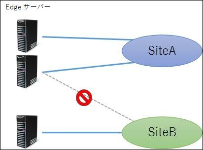
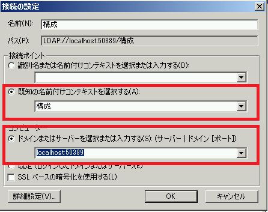
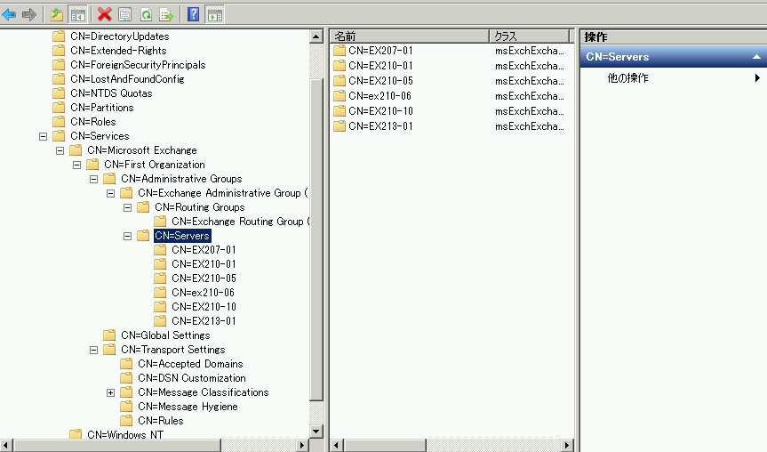
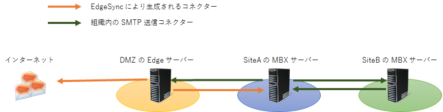

こんにちは。Exchange サポートの竹本です。
今回は意外と知っているようで見落としがちな Edge サーバーについてのおさらいです。
Exchange 2013 で HUB の役割がなくなり、2016 では CAS の役割もなくなりました。しかし！エッジ トランスポート サーバーは未だ顕在している、重要な役割です。
そもそも エッジ トランスポート サーバーとは
これは皆さまご存知かと思いますが、エッジ トランスポート サーバーは Exchange 役割の中で唯一、境界ネットワーク (DMZ) に置くことができるサーバーであり、Exchange 組織とインターネット間で発生するすべての受信および送信メッセージ (メールフロー) を処理します。
また、メッセージ保護やセキュリティ向上を目的としたトランスポート エージェントも組み込まれているため、内部 Exchange 組織がインターネット上の脅威 (ウィルスやスパムなど) にさらされるリスクを最小限に抑えることが可能です。
主な機能概要は以下でも紹介しておりますので、ご参照ください。
* エッジ トランスポート サーバーには、リバース プロキシ サーバーや CAS サーバーのように、クライアントからの HTTP リクエストを処理する機能はありません。あくまでもトランスポート サーバーとして機能します。
Title : エッジ トランスポート サーバー
URL : https://technet.microsoft.com/ja-jp/library/bb124701.aspx
なおエッジ トランスポート サーバーは、組織の Exchange サーバーと一切特別な関係を持たないスタンドアロン サーバーとして使用することもできれば、エッジ サブスクリプションを作成することで組織内のトランスポート サーバーとして扱う (Get-TransportServer 等でも表示されるようになります) 事も可能です。
エッジ サブスクリプションを作成すると
上述の通り、エッジ サブスクリプションを作成することで組織内のトランスポート サーバーとして扱う事ができるようになり、管理面、機能面共に様々なメリットがあります。
Title : エッジ サブスクリプション
URL : https://technet.microsoft.com/ja-jp/library/aa997438(v=exchg.150).aspx
サブスクリプションにより組織のディレクトリに保存された Active Directory データがエッジ トランスポート サーバー上 Active Directory Lightweight Directory Services (AD LDS) に同期されますが、これはあくまでもメールボックス サーバー (Exchange Server 2010 の場合は ハブ トランスポートサーバー) – エッジ トランスポート サーバー間で行われる同期処理の一環であり、エッジ トランスポート サーバーが直接組織内のドメイン コントローラーと通信を行うことはありません。
以下にはエッジ トランスポート サーバーで必要な通信ポートの情報や、ちょっと特殊な (エッジならではの) DNS の設定について紹介しておりますので、是非ご参照ください。
Title : エッジ トランスポート サーバーの計画
URL : https://technet.microsoft.com/JA-JP/library/dn641596(v=exchg.150).aspx
では、いくつか細かな点を見ていきたいと思います。
エッジ サブスクリプションの作成単位
エッジ サブスクリプションは、個々のエッジ トランスポート サーバーと、組織内の任意の AD サイトの間で作成されるものとなり、1 つの AD サイトに複数のエッジ トランスポート サーバーを購読させることは可能ですが、1 つのエッジ トランスポート サーバーが複数の Active Directory サイトを購読することはできません。
またエッジ トランスポート サーバー間での設定同期は行われないので、複数のエッジ トランスポート サーバーが展開されている環境では、各サーバーにおいて AD サイトを購読するための設定 (サブスクリプションの作成) が必要となります。
以下のようなイメージですね。

ドメインに参加できるのか
エッジ トランスポート サーバーの役割は、基本的に DMZ に配置することを想定された役割となり、組織の Active Directory ドメインに参加する必要がありません。
技術的には、ドメインに参加させることは可能であり、それ自体がサポートされない構成といったことはありませんが、実績も多くそして推奨される構成はワークグループ構成です。
同期されたデータの格納場所
先ほど、組織の AD 上のデータはエッジ トランスポート サーバー上の AD LDS に格納されるといいましたが、結局は同じ Active Directory をベースとしていますので、ADSI エディターを使ってその中のデータを見ることができます。
具体的には、ADSI エディターを起動して接続時の情報として、以下のように50389 ポートに接続するように入力します。

接続後の画面を展開すると、組織内で見慣れた構成パーティションと同じように、Microsoft Exchange 配下の情報を確認することができます。
* もちろん、すべてのデータが同期されるわけではありませんので、確認できる情報にも限りがあります。

エッジ トランスポート サーバーを用いたメール ルーティング
エッジ サブスクリプションを作成した後、その組織にはエッジ トランスポート サーバーを SourceTransportServer とした送信コネクターが 2 つ、作成されます。
まず、それぞれの用途について簡単に説明します。
* それぞれのコネクターの詳細については、上述の TechNet でも紹介されていますので、是非！
EdgeSync - <サイト名> to Internet
その名の通り、Exchange 組織 (購読したサイト) からエッジ トランスポート サーバーを経由して、外部へ送信するための送信コネクターです。EdgeSync – Inbound to <サイト名>
こちらはエッジ トランスポート サーバーがインターネットから受信したメッセージを、Exchange 組織 (購読したサイト) のサーバーへ送信するための送信コネクターです。このコネクターの特徴として、アドレス スペースおよびスマートホストに “–” が設定されている事が挙げられます。アドレス スペースに設定された “–” は、Exchange 組織の承認済みドメイン (権限のあるドメイン、および内部の中継ドメイン) を意味し、スマートホストに設定された “–” は、の Active Directory サイトにあるすべてのメールボックス サーバー (Exchange Server 2010 の場合は HUB サーバー) を示します。
エッジ トランスポート サーバーが動作する上で必要となる送信コネクターは最低限上記 2 つとなりますが、皆さま、お気づきでしょうか。
Exchange 組織のメールボックス サーバー (Exchange Server 2010 の場合はハブトランスポート サーバー) から、エッジ トランスポート サーバーへのコネクターがありません。
既に説明の通り、エッジ サブスクリプションを購読済みの環境では、エッジ トランスポート サーバーは Exchange 組織の 1 サーバーとして扱われます。そして、組織内のトランスポート サーバー同士の SMTP 通信に送信コネクターは必要ありません。これは異なる AD サイト間におけるメールフローと同様で、暗黙的に用意された 組織内のSMTP 送信コネクターが使用されるためです。
少しわかりにくいですが、これも絵にしてみると、こんな感じです。(Exchange Server 2013 の場合です。)

つまり、エッジ サブスクリプションの設定が完了すれば、最低限既定で作成されるコネクターだけで外部との送受信が可能となります。
と、気づいたら長文となってしまいました。
エッジ トランスポート サーバーにはまだまだ便利な機能がありますので、次の機会にご紹介したいと思います。
今後とも、当ブログ並びにサポート チームをよろしくお願いいたします。
12月24日、第二弾を公開しました。是非ご一読ください。
Edge サーバーを振り返る エピソード 2